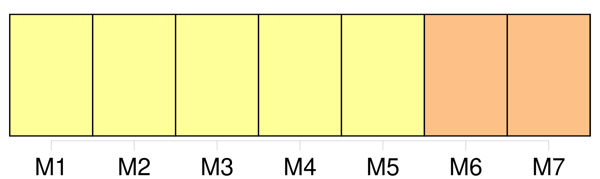
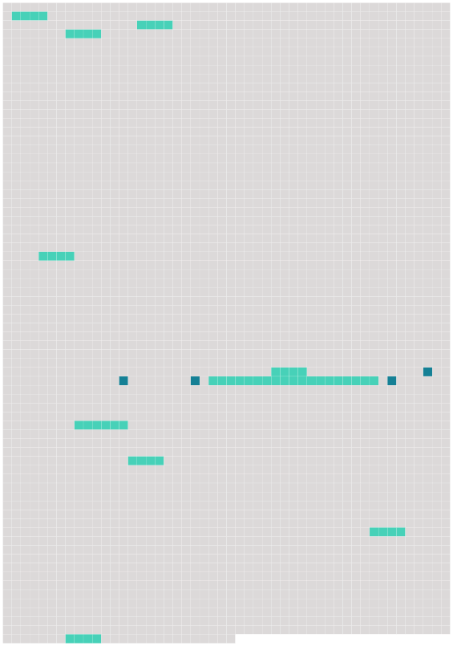

Longueur nb maillons : 14 mentions |
  |
Les zèbres communs mesurent de 11 1, 10 mètre à 12 1, 40 mètre ( 13 1, 25 mètre en moyenne ) au garrot contre 15 1, 30 mètre à 16 1, 60 mètre ( 17 1, 45 mètre en moyenne ) au garrot pour [les zèbres de Grévy] , et vivent en moyenne 14 25 à 18 30 ans dans la nature et jusqu'à 19 40 ans dans un zoo. 20 La longueur du corps va de 21 2, 20 mètres à 22 2, 70 mètres pour les zèbres communs et de 23 2, 50 mètres à 24 3, 00 mètres pour [les zèbres de Grévy] et 25 la longueur de la queue de 26 40 à 27 75 cm. 28 La masse varie de 29 175 à 30 300 kg pour les zèbres communs contre 31 300 à 32 400 kg pour [les zèbres de Grévy] [39 phrases]
Ainsi le zèbre de Burchell possède de 200 vingt-cinq à 201 trente raies sur 202 chacun de 203 ses flancs, [le zèbre de Grévy] 204 en compte environ 205 quatre-vingt et le zèbre des montagnes 206 quarante-trois. [13 phrases] Il comprend 296 deux sous-espèces, en 297 danger d'298 extinction ; • • [Le zèbre de Grévy] ( Equus grevyi ) est le plus grand de tous les zèbres. [Il] possède 299 300 une longue crinière hérissée ainsi qu'une tête longue et étroite qui [le] fait ressembler à ule une mule. [C'] est [un habitant 301 des savanes d'302 Éthiopie, de 303 Somalie et 304 du nord 305 du Kenya] [Il] est également menacé d'306 extinction. [7 phrases] À ce moment -là, on pense qu'ils ressemblaient beaucoup [au zèbre de Grévy d'aujourd'hui] [5 phrases] À 354 la même époque, celui qui occupait 355 le Sud de l'Afrique est Equus pilicatus, ancêtre direct [du zèbre de Grévy] [10 phrases]
On dit que le zèbre hennit comme le cheval mais [le zèbre de Grévy] brait, comme l'âne, on dit aussi qu'il jappe. [15 phrases]
[Le Zèbre de Grévy] est aussi 482 le symbole de l'Afrique et de 488 la faune africaine. |
 |
La ressource peut être téléchargée sur la page Ortolang
Si vous avez des questions ou vous voyez des erreurs, merci d'envoyer un mail à silvia.federzoni89@gmail.com
Site développé par S. Federzoni (contact)